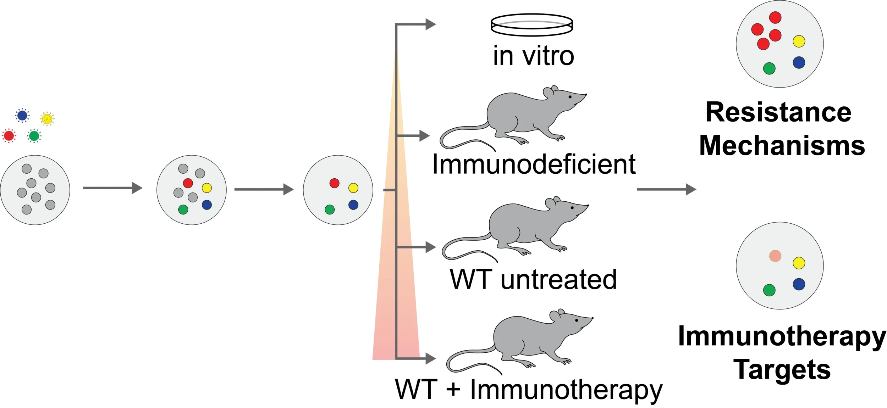
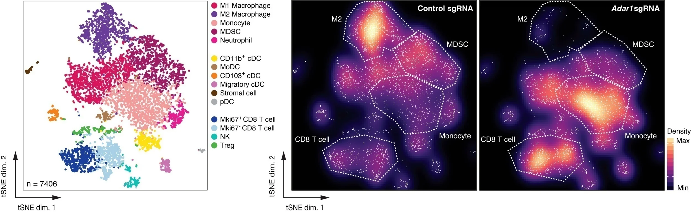

Research
Our laboratory, based at the Broad Institute of MIT and Harvard and the Massachusetts General Hospital Cancer Center, is working to improve the treatment of cancer using immunotherapy.
We use a range of approaches including mouse models, cellular immunology, functional genomics, and single cell profiling to understand how cancers evade the immune system and to identify new targets to enhance immune responses to tumors.
Some of the ongoing projects in our lab include:

In vivo CRISPR-based genetic screens for target discovery
We use large-scale genetic screening in animals to discover previously unknown or poorly understood mechanisms regulating tumor responses to immunotherapy. Using these tools, we have already identified that deletion of PTPN2, a phosphatase that negatively regulates interferon gamma sensing, markedly enhances tumor sensitivity to PD-1 checkpoint blockade.

Identifying pathways that can overcome acquired resistance to immunotherapy
Loss of ADAR1, an adenosine deaminase acting on RNA, inflames the tumor microenvironment and can overcome resistance to immune checkpoint blockade.
Understanding antigen presentation in the context of immunotherapy
The processing and presentation of cellular-derived peptides in major histocompatibility complexes (MHC) regulate the specific interaction between a tumor and infiltrating immune cells. We are working to understand how tumors evade the immune system via modulation of this pathway.